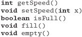

Chapter 4
Pragmatic Paranoia
Tip 30
You Can't Write Perfect Software
Did that hurt? It shouldn't. Accept it as an axiom of life. Embrace it. Celebrate it. Because perfect software doesn't exist. No one in the brief history of computing has ever written a piece of perfect software. It's unlikely that you'll be the first. And unless you accept this as a fact, you'll end up wasting time and energy chasing an impossible dream.
So, given this depressing reality, how does a Pragmatic Programmer turn it into an advantage? That's the topic of this chapter.
Everyone knows that they personally are the only good driver on Earth. The rest of the world is out there to get them, blowing through stop signs, weaving between lanes, not indicating turns, talking on the telephone, reading the paper, and just generally not living up to our standards. So we drive defensively. We look out for trouble before it happens, anticipate the unexpected, and never put ourselves into a position from which we can't extricate ourselves.
The analogy with coding is pretty obvious. We are constantly interfacing with other people's code—code that might not live up to our high standards—and dealing with inputs that may or may not be valid. So we are taught to code defensively. If there's any doubt, we validate all information we're given. We use assertions to detect bad data. We check for consistency, put constraints on database columns, and generally feel pretty good about ourselves.
But Pragmatic Programmers take this a step further. They don't trust themselves, either. Knowing that no one writes perfect code, including themselves, Pragmatic Programmers code in defenses against their own mistakes. We describe the first defensive measure in Design by Contract: clients and suppliers must agree on rights and responsibilities.
In Dead Programs Tell No Lies, we want to ensure that we do no damage while we're working the bugs out. So we try to check things often and terminate the program if things go awry.
Assertive Programming describes an easy method of checking along the way—write code that actively verifies your assumptions.
Exceptions, like any other technique, can cause more harm than good if not used properly. We'll discuss the issues in When to Use Exceptions.
As your programs get more dynamic, you'll find yourself juggling system resources—memory, files, devices, and the like. In How to Balance Resources, we'll suggest ways of ensuring that you don't drop any of the balls.
In a world of imperfect systems, ridiculous time scales, laughable tools, and impossible requirements, let's play it safe.
When everybody actually is out to get you, paranoia is just good thinking.
• Woody Allen
21. Design by Contract
Nothing astonishes men so much as common sense and plain dealing.
• Ralph Waldo Emerson, Essays
Dealing with computer systems is hard. Dealing with people is even harder. But as a species, we've had longer to figure out issues of human interactions. Some of the solutions we've come up with during the last few millennia can be applied to writing software as well. One of the best solutions for ensuring plain dealing is the contract.
A contract defines your rights and responsibilities, as well as those of the other party. In addition, there is an agreement concerning repercussions if either party fails to abide by the contract.
Maybe you have an employment contract that specifies the hours you'll work and the rules of conduct you must follow. In return, the company pays you a salary and other perks. Each party meets its obligations and everyone benefits.
It's an idea used the world over—both formally and informally—to help humans interact. Can we use the same concept to help software modules interact? The answer is "yes."
DBC
Bertrand Meyer [Mey97b] developed the concept of Design by Contract for the language Eiffel.[1] It is a simple yet powerful technique that focuses on documenting (and agreeing to) the rights and responsibilities of software modules to ensure program correctness. What is a correct program? One that does no more and no less than it claims to do. Documenting and verifying that claim is the heart of Design by Contract (DBC, for short).
[1] Based in part on earlier work by Dijkstra, Floyd, Hoare, Wirth, and others. For more information on Eiffel itself, see [URL 10] and [URL 11].
Every function and method in a software system does something. Before it starts that something, the routine may have some expectation of the state of the world, and it may be able to make a statement about the state of the world when it concludes. Meyer describes these expectations and claims as follows:
- Preconditions. What must be true in order for the routine to be called; the routine's requirements. A routine should never get called when its preconditions would be violated. It is the caller's responsibility to pass good data (see the box on page 115).
- Postconditions. What the routine is guaranteed to do; the state of the world when the routine is done. The fact that the routine has a postcondition implies that it will conclude: infinite loops aren't allowed.
- Class invariants. A class ensures that this condition is always true from the perspective of a caller. During internal processing of a routine, the invariant may not hold, but by the time the routine exits and control returns to the caller, the invariant must be true. (Note that a class cannot give unrestricted write-access to any data member that participates in the invariant.)
Let's look at the contract for a routine that inserts a data value into a unique, ordered list. In iContract, a preprocessor for Java available from [URL 17], you'd specify it as
Here we are saying that nodes in this list must always be in increasing order. When you insert a new node, it can't exist already, and we guarantee that the node will be found after you have inserted it.
You write these preconditions, postconditions, and invariants in the target programming language, perhaps with some extensions. For example, iContract provides predicate logic operators—forall, exists, and implies—in addition to normal Java constructs. Your assertions can query the state of any object that the method can access, but be sure that the query is free from any side effects (see page 124).
The contract between a routine and any potential caller can thus be read as
If all the routine's preconditions are met by the caller, the routine shall guarantee that all postconditions and invariants will be true when it completes.
If either party fails to live up to the terms of the contract, then a remedy (which was previously agreed to) is invoked—an exception is raised, or the program terminates, for instance. Whatever happens, make no mistake that failure to live up to the contract is a bug. It is not something that should ever happen, which is why preconditions should not be used to perform things such as user-input validation.
Tip 31
In Orthogonality, page 34, we recommended writing "shy" code. Here, the emphasis is on "lazy" code: be strict in what you will accept before you begin, and promise as little as possible in return. Remember, if your contract indicates that you'll accept anything and promise the world in return, then you've got a lot of code to write!
Inheritance and polymorphism are the cornerstones of object-oriented languages and an area where contracts can really shine. Suppose you are using inheritance to create an "is-a-kind-of" relationship, where one class "is-a-kind-of" another class. You probably want to adhere to the Liskov Substitution Principle [Lis88]:
Subclasses must be usable through the base class interface without the need for the user to know the difference.
In other words, you want to make sure that the new subtype you have created really "is-a-kind-of" the base type—that it supports the same methods, and that the methods have the same meaning. We can do this with contracts. We need to specify a contract only once, in the base class, to have it applied to every future subclass automatically. A subclass may, optionally, accept a wider range of input, or make stronger guarantees. But it must accept at least as much, and guarantee as much, as its parent.
For example, consider the Java base class java.awt.Component. You can treat any visual component in AWT or Swing as a Component, without knowing that the actual subclass is a button, a canvas, a menu, or whatever. Each individual component can provide additional, specific functionality, but it has to provide at least the basic capabilities defined by Component. But there's nothing to prevent you from creating a subtype of Component that provides correctly named methods that do the wrong thing. You can easily create a paint method that doesn't paint, or a setFont method that doesn't set the font. AWT doesn't have contracts to catch the fact that you didn't live up to the agreement.
Without a contract, all the compiler can do is ensure that a subclass conforms to a particular method signature. But if we put a base class contract in place, we can now ensure that any future subclass can't alter the meanings of our methods. For instance, you might want to establish a contract for setFont such as the following, which ensures that the font you set is the font you get:
/**
* @pre f != null
* @post getFont() == f
*/
public void setFont(final Font f) {
// ...
Implementing DBC
The greatest benefit of using DBC may be that it forces the issue of requirements and guarantees to the forefront. Simply enumerating at design time what the input domain range is, what the boundary conditions are, and what the routine promises to deliver—or, more importantly, what it doesn't promise to deliver—is a huge leap forward in writing better software. By not stating these things, you are back to programming by coincidence (see page 172), which is where many projects start, finish, and fail.
In languages that do not support DBC in the code, this might be as far as you can go—and that's not too bad. DBC is, after all, a design technique. Even without automatic checking, you can put the contract in the code as comments and still get a very real benefit. If nothing else, the commented contracts give you a place to start looking when trouble strikes.
Assertions
While documenting these assumptions is a great start, you can get much greater benefit by having the compiler check your contract for you. You can partially emulate this in some languages by using assertions (see Assertive Programming, page 122). Why only partially? Can't you use assertions to do everything DBC can do?
Unfortunately, the answer is no. To begin with, there is no support for propagating assertions down an inheritance hierarchy. This means that if you override a base class method that has a contract, the assertions that implement that contract will not be called correctly (unless you duplicate them manually in the new code). You must remember to call the class invariant (and all base class invariants) manually before you exit every method. The basic problem is that the contract is not automatically enforced.
Also, there is no built-in concept of "old" values; that is, values as they existed at the entry to a method. If you're using assertions to enforce contracts, you must add code to the precondition to save any information you'll want to use in the postcondition. Compare this with iContract, where the postcondition can just reference "variable@pre," or with Eiffel, which supports "old expression."
Finally, the runtime system and libraries are not designed to support contracts, so these calls are not checked. This is a big loss, because it is often at the boundary between your code and the libraries it uses that the most problems are detected (see Dead Programs Tell No Lies, page 120 for a more detailed discussion).
Language Support
Languages that feature built-in support of DBC (such as Eiffel and Sather [URL 12]) check pre- and postconditions automatically in the compiler and runtime system. You get the greatest benefit in this case because all of the code base (libraries, too) must honor their contracts.
But what about more popular languages such as C, C++, and Java? For these languages, there are preprocessors that process contracts embedded in the original source code as special comments. The preprocessor expands these comments to code that verifies the assertions.
For C and C++, you may want to investigate Nana [URL 18]. Nana doesn't handle inheritance, but it does use the debugger at runtime to monitor assertions in a novel way.
For Java, there is iContract [URL 17]. It takes comments (in JavaDoc form) and generates a new source file with the assertion logic included.
Preprocessors aren't as good as a built-in facility. They can be messy to integrate into your project, and other libraries you use won't have contracts. But they can still be very helpful; when a problem is discovered this way—especially one that you would never have found—it's almost like magic.
DBC and Crashing Early
DBC fits in nicely with our concept of crashing early (see Dead Programs Tell No Lies, page 120). Suppose you have a method that calculates square roots (such as in the Eiffel class DOUBLE). It needs a precondition that restricts the domain to positive numbers. An Eiffel precondition is declared with the keyword require, and a postcondition is declared with ensure, so you could write
If your algorithm for calculating the square root fails (or isn't within the specified error tolerance), you get an error message and a stack trace to show you the call chain.
If you pass sqrt a negative parameter, the Eiffel runtime prints the error "sqrt_arg_must_be_positive," along with a stack trace. This is better than the alternative in languages such as Java, C, and C++, where passing a negative number to sqrt returns the special value NaN (Not a Number). It may be some time later in the program that you attempt to do some math on NaN, with surprising results.
It's much easier to find and diagnose the problem by crashing early, at the site of the problem.
Other Uses of Invariants
So far we have discussed pre- and postconditions that apply to individual methods and invariants that apply to all methods within a class, but there are other useful ways to use invariants.
Loop Invariants
Getting the boundary conditions right on a nontrivial loop can be problematic. Loops are subject to the banana problem (I know how to spell "banana," but I don't know when to stop), fencepost errors (not knowing whether to count the fenceposts or the spaces between them), and the ubiquitous "off by one" error [URL 52].
Invariants can help in these situations: a loop invariant is a statement of the eventual goal of a loop, but is generalized so that it is also valid before the loop executes and on each iteration through the loop. You can think of it as a kind of miniature contract. The classic example is a routine that finds the maximum value in an array.
(arr[m:n] is a notational convenience meaning a slice of the array from index m to n.) The invariant must be true before the loop runs, and the body of the loop must ensure that it remains true as the loop executes. In this way we know that the invariant also holds when the loop terminates, and therefore that our result is valid. Loop invariants can be coded explicitly as assertions, but they are also useful as design and documentation tools.
Semantic Invariants
You can use semantic invariants to express inviolate requirements, a kind of "philosophical contract."
We once wrote a debit card transaction switch. A major requirement was that the user of a debit card should never have the same transaction applied to their account twice. In other words, no matter what sort of failure mode might happen, the error should be on the side of not processing a transaction rather than processing a duplicate transaction.
This simple law, driven directly from the requirements, proved to be very helpful in sorting out complex error recovery scenarios, and guided the detailed design and implementation in many areas.
Be sure not to confuse requirements that are fixed, inviolate laws with those that are merely policies that might change with a new management regime. That's why we use the term semantic invariants—it must be central to the very meaning of a thing, and not subject to the whims of policy (which is what more dynamic business rules are for).
When you find a requirement that qualifies, make sure it becomes a well-known part of whatever documentation you are producing—whether it is a bulleted list in the requirements document that gets signed in triplicate or just a big note on the common whiteboard that everyone sees. Try to state it clearly and unambiguously. For example, in the debit card example, we might write
ERR IN FAVOR OF THE CONSUMER.
This is a clear, concise, unambiguous statement that's applicable in many different areas of the system. It is our contract with all users of the system, our guarantee of behavior.
Dynamic Contracts and Agents
Until now, we have talked about contracts as fixed, immutable specifications. But in the landscape of autonomous agents, this doesn't need to be the case. By the definition of "autonomous," agents are free to reject requests that they do not want to honor. They are free to renegotiate the contract—"I can't provide that, but if you give me this, then I might provide something else."
Certainly any system that relies on agent technology has a critical dependence on contractual arrangements—even if they are dynamically generated.
Imagine: with enough components and agents that can negotiate their own contracts among themselves to achieve a goal, we might just solve the software productivity crisis by letting software solve it for us.
But if we can't use contracts by hand, we won't be able to use them automatically. So next time you design a piece of software, design its contract as well.
Related sections include:
- Orthogonality, page 34
- Dead Programs Tell No Lies, page 120
- Assertive Programming, page 122
- How to Balance Resources, page 129
- Decoupling and the Law of Demeter, page 138
- Temporal Coupling, page 150
- Programming by Coincidence, page 172
- Code That's Easy to Test, page 189
- Pragmatic Teams, page 224
Challenges
- Points to ponder: If DBC is so powerful, why isn't it used more widely? Is it hard to come up with the contract? Does it make you think about issues you'd rather ignore for now? Does it force you to THINK!? Clearly, this is a dangerous tool!
Exercises
14. What makes a good contract? Anyone can add preconditions and postconditions, but will they do you any good? Worse yet, will they actually do more harm than good? For the example below and for those in Exercises 15 and 16, decide whether the specified contract is good, bad, or ugly, and explain why.
First, let's look at an Eiffel example. Here we have a routine for adding a STRING to a doubly linked, circular list (remember that preconditions are labeled with require, and postconditions with ensure).

15. Next, let's try an example in Java—somewhat similar to the example in Exercise 14. insertNumber inserts an integer into an ordered list. Pre-and postconditions are labeled as in iContract (see [URL 17]).
16. Here's a fragment from a stack class in Java. Is this a good contract?
17. The classic examples of DBC (as in Exercises 14–16) show an implementation of an ADT (Abstract Data Type)—typically a stack or queue. But not many people really write these kinds of low-level classes.
So, for this exercise, design an interface to a kitchen blender. It will eventually be a Web-based, Internet-enabled, CORBA-fied blender, but for now we just need the interface to control it. It has ten speed settings (0 means off). You can't operate it empty, and you can change the speed only one unit at a time (that is, from 0 to 1, and from 1 to 2, not from 0 to 2).
Here are the methods. Add appropriate pre- and postconditions and an invariant.

18. How many numbers are in the series 0,5,10,15,..., 100?
22. Dead Programs Tell No Lies
Have you noticed that sometimes other people can detect that things aren't well with you before you're aware of the problem yourself? It's the same with other people's code. If something is starting to go awry with one of our programs, sometimes it is a library routine that catches it first. Maybe a stray pointer has caused us to overwrite a file handle with something meaningless. The next call to read will catch it. Perhaps a buffer overrun has trashed a counter we're about to use to determine how much memory to allocate. Maybe we'll get a failure from malloc. A logic error a couple of million instructions ago means that the selector for a case statement is no longer the expected 1, 2, or 3. We'll hit the default case (which is one reason why each and every case/switch statement needs to have a default clause—we want to know when the "impossible" has happened).
It's easy to fall into the "it can't happen" mentality. Most of us have written code that didn't check that a file closed successfully, or that a trace statement got written as we expected. And all things being equal, it's likely that we didn't need to—the code in question wouldn't fail under any normal conditions. But we're coding defensively. We're looking for rogue pointers in other parts of our program trashing the stack. We're checking that the correct versions of shared libraries were actually loaded.
All errors give you information. You could convince yourself that the error can't happen, and choose to ignore it. Instead, Pragmatic Programmers tell themselves that if there is an error, something very, very bad has happened.
Tip 32
Crash, Don't Trash
One of the benefits of detecting problems as soon as you can is that you can crash earlier. And many times, crashing your program is the best thing you can do. The alternative may be to continue, writing corrupted data to some vital database or commanding the washing machine into its twentieth consecutive spin cycle.
The Java language and libraries have embraced this philosophy. When something unexpected happens within the runtime system, it throws a RuntimeException. If not caught, this will percolate up to the top level of the program and cause it to halt, displaying a stack trace.
You can do the same in other languages. If you don't have an exception mechanism, or if your libraries don't throw exceptions, then make sure you handle the errors yourself. In C, macros can be very useful for this:
Then you can wrap calls that should never fail using
CHECK(stat("/tmp", &stat_buff), 0);
If it should fail, you'd get a message written to stderr:
source.c line 19
'stat("/tmp", &stat_buff)': expected 0, got -1
Clearly it is sometimes inappropriate simply to exit a running program. You may have claimed resources that might not get released, or you may need to write log messages, tidy up open transactions, or interact with other processes. The techniques we discuss in When to Use Exceptions, page 125, will help here. However, the basic principle stays the same—when your code discovers that something that was supposed to be impossible just happened, your program is no longer viable. Anything it does from this point forward becomes suspect, so terminate it as soon as possible. A dead program normally does a lot less damage than a crippled one.
Related sections include:
- Design by Contract, page 109
- When to Use Exceptions, page 125
23. Assertive Programming
There is a luxury in self-reproach. When we blame ourselves we feel no one else has a right to blame us.
• Oscar Wilde, The Picture of Dorian Gray
It seems that there's a mantra that every programmer must memorize early in his or her career. It is a fundamental tenet of computing, a core belief that we learn to apply to requirements, designs, code, comments, just about everything we do. It goes
THIS CAN NEVER HAPPEN...
"This code won't be used 30 years from now, so two-digit dates are fine." "This application will never be used abroad, so why internationalize it?" "count can't be negative." "This printf can't fail."
Let's not practice this kind of self-deception, particularly when coding.
Tip 33
If It Can't Happen, Use Assertions to Ensure That It Won't
Whenever you find yourself thinking "but of course that could never happen," add code to check it. The easiest way to do this is with assertions. In most C and C++ implementations, you'll find some form of assert or _assert macro that checks a Boolean condition. These macros can be invaluable. If a pointer passed in to your procedure should never be NULL, then check for it:
void writeString(char *string) {
assert(string != NULL);
...
Assertions are also useful checks on an algorithm's operation. Maybe you've written a clever sort algorithm. Check that it works:
for (int i = 0; i < num_entries-1; i++) {
assert(sorted[i] <= sorted[i+1]);
}
Of course, the condition passed to an assertion should not have a side effect (see the box on page 124). Also remember that assertions may be turned off at compile time—never put code that must be executed into an assert.
Don't use assertions in place of real error handling. Assertions check for things that should never happen: you don't want to be writing code such as
printf("Enter 'Y' or 'N': ");
ch = getchar();
assert((ch == 'Y') || (ch == 'N')); /* bad idea! */
And just because the supplied assert macros call exit when an assertion fails, there's no reason why versions you write should. If you need to free resources, have an assertion failure generate an exception, longjmp to an exit point, or call an error handler. Just make sure the code you execute in those dying milliseconds doesn't rely on the information that triggered the assertion failure in the first place.
Leave Assertions Turned On
There is a common misunderstanding about assertions, promulgated by the people who write compilers and language environments. It goes something like this:
Assertions add some overhead to code. Because they check for things that should never happen, they'll get triggered only by a bug in the code. Once the code has been tested and shipped, they are no longer needed, and should be turned off to make the code run faster. Assertions are a debugging facility.
There are two patently wrong assumptions here. First, they assume that testing finds all the bugs. In reality, for any complex program you are unlikely to test even a miniscule percentage of the permutations your code will be put through (see Ruthless Testing, page 245). Second, the optimists are forgetting that your program runs in a dangerous world. During testing, rats probably won't gnaw through a communications cable, someone playing a game won't exhaust memory, and log files won't fill the hard drive. These things might happen when your program runs in a production environment. Your first line of defense is checking for any possible error, and your second is using assertions to try to detect those you've missed.
Turning off assertions when you deliver a program to production is like crossing a high wire without a net because you once made it across in practice. There's dramatic value, but it's hard to get life insurance.
Even if you do have performance issues, turn off only those assertions that really hit you. The sort example above may be a critical part of your application, and may need to be fast. Adding the check means another pass through the data, which might be unacceptable. Make that particular check optional,[2] but leave the rest in.
[2] In C-based languages, you can either use the preprocessor or use if statements to make assertions optional. Many implementations turn off code generation for the assert macro if a compile-time flag is set (or not set). Otherwise, you can place the code within an if statement with a constant condition, which many compilers (including most common Java systems) will optimize away.
Related sections include:
- Debugging, page 90
- Design by Contract, page 109
- How to Balance Resources, page 129
- Programming by Coincidence, page 172
Exercises
19. A quick reality check. Which of these "impossible" things can happen?
- A month with fewer than 28 days
stat(".",&sb) == -1(that is, can't access the current directory)- In C++:
a = 2; b = 3;if(a + b != 5) exit(1); - A triangle with an interior angle sum ≠ 180°
- A minute that doesn't have 60 seconds
- In Java:
(a + 1) <= a
20. Develop a simple assertion checking class for Java.
24. When to Use Exceptions
In Dead Programs Tell No Lies, page 120, we suggested that it is good practice to check for every possible error—particularly the unexpected ones. However, in practice this can lead to some pretty ugly code; the normal logic of your program can end up being totally obscured by error handling, particularly if you subscribe to the "a routine must have a single return statement" school of programming (we don't). We've seen code that looks something like the following:
Fortunately, if the programming language supports exceptions, you can rewrite this code in a far neater way:
The normal flow of control is now clear, with all the error handling moved off to a single place.
What Is Exceptional?
One of the problems with exceptions is knowing when to use them. We believe that exceptions should rarely be used as part of a program's normal flow; exceptions should be reserved for unexpected events. Assume that an uncaught exception will terminate your program and ask yourself, "Will this code still run if I remove all the exception handlers?" If the answer is "no," then maybe exceptions are being used in nonexceptional circumstances.
For example, if your code tries to open a file for reading and that file does not exist, should an exception be raised?
Our answer is, "It depends." If the file should have been there, then an exception is warranted. Something unexpected happened—a file you were expecting to exist seems to have disappeared. On the other hand, if you have no idea whether the file should exist or not, then it doesn't seem exceptional if you can't find it, and an error return is appropriate.
Let's look at an example of the first case. The following code opens the file /etc/passwd, which should exist on all Unix systems. If it fails, it passes on the FileNotFoundException to its caller.
However, the second case may involve opening a file specified by the user on the command line. Here an exception isn't warranted, and the code looks different:
Note that the FileInputStream call can still generate an exception, which the routine passes on. However, the exception will be generated under only truly exceptional circumstances; simply trying to open a file that does not exist will generate a conventional error return.
Tip 34
Use Exceptions for Exceptional Problems
Why do we suggest this approach to exceptions? Well, an exception represents an immediate, nonlocal transfer of control—it's a kind of cascading goto. Programs that use exceptions as part of their normal processing suffer from all the readability and maintainability problems of classic spaghetti code. These programs break encapsulation: routines and their callers are more tightly coupled via exception handling.
Error Handlers Are an Alternative
An error handler is a routine that is called when an error is detected. You can register a routine to handle a specific category of errors. When one of these errors occurs, the handler will be called.
There are times when you may want to use error handlers, either instead of or alongside exceptions. Clearly, if you are using a language such as C, which does not support exceptions, this is one of your few other options (see the challenge on the next page). However, sometimes error handlers can be used even in languages (such as Java) that have a good exception handling scheme built in.
Consider the implementation of a client-server application, using Java's Remote Method Invocation (RMI) facility. Because of the way RMI is implemented, every call to a remote routine must be prepared to handle a RemoteException. Adding code to handle these exceptions can become tedious, and means that it is difficult to write code that works with both local and remote routines. A possible work-around is to wrap your remote objects in a class that is not remote. This class then implements an error handler interface, allowing the client code to register a routine to be called when a remote exception is detected.
Related sections include:
Challenges
- Languages that do not support exceptions often have some other nonlocal transfer of control mechanism (C has
longjmp/setjmp, for example). Consider how you could implement some kind of ersatz exception mechanism using these facilities. What are the benefits and dangers? What special steps do you need to take to ensure that resources are not orphaned? Does it make sense to use this kind of solution whenever you code in C?
Exercises
21. While designing a new container class, you identify the following possible error conditions:
- No memory available for a new element in the add routine
- Requested entry not found in the
fetchroutine nullpointer passed to theaddroutine
How should each be handled? Should an error be generated, should an exception be raised, or should the condition be ignored?
25. How to Balance Resources
"I brought you into this world," my father would say, "and I can take you out. It don't make no difference to me. I'll just make another one like you."
• Bill Cosby, Fatherhood
We all manage resources whenever we code: memory, transactions, threads, files, timers—all kinds of things with limited availability. Most of the time, resource usage follows a predictable pattern: you allocate the resource, use it, and then deallocate it.
However, many developers have no consistent plan for dealing with resource allocation and deallocation. So let us suggest a simple tip:
Tip 35
This tip is easy to apply in most circumstances. It simply means that the routine or object that allocates a resource should be responsible for deallocating it. Let's see how it applies by looking at an example of some bad code—an application that opens a file, reads customer information from it, updates a field, and writes the result back. We've eliminated error handling to make the example clearer.
At first sight, the routine updateCustomer looks pretty good. It seems to implement the logic we require—reading a record, updating the balance, and writing the record back out. However, this tidiness hides a major problem. The routines readCustomer and writeCustomer are tightly coupled[3]—they share the global variable cFile. readCustomer opens the file and stores the file pointer in cFile, and writeCustomer uses that stored pointer to close the file when it finishes. This global variable doesn't even appear in the updateCustomer routine.
[3] For a discussion of the dangers of coupled code, see Decoupling and the Law of Demeter, page 138.
Why is this bad? Let's consider the unfortunate maintenance programmer who is told that the specification has changed—the balance should be updated only if the new value is not negative. She goes into the source and changes updateCustomer:
All seems fine during testing. However, when the code goes into production, it collapses after several hours, complaining of too many open files. Because writeCustomer is not getting called in some circumstances, the file is not getting closed.
A very bad solution to this problem would be to deal with the special case in updateCustomer:
This will fix the problem—the file will now get closed regardless of the new balance—but the fix now means that three routines are coupled through the global cFile. We're falling into a trap, and things are going to start going downhill rapidly if we continue on this course.
The finish what you start tip tells us that, ideally, the routine that allocates a resource should also free it. We can apply it here by refactoring the code slightly:

Now all the responsibility for the file is in the updateCustomer routine. It opens the file and (finishing what it starts) closes it before exiting. The routine balances the use of the file: the open and close are in the same place, and it is apparent that for every open there will be a corresponding close. The refactoring also removes an ugly global variable.
Nest Allocations
The basic pattern for resource allocation can be extended for routines that need more than one resource at a time. There are just two more suggestions:
- Deallocate resources in the opposite order to that in which you allocate them. That way you won't orphan resources if one resource contains references to another.
- When allocating the same set of resources in different places in your code, always allocate them in the same order. This will reduce the possibility of deadlock. (If process A claims
resource1and is about to claimresource2,while process B has claimedresource2and is trying to getresource1,the two processes will wait forever.)
It doesn't matter what kind of resources we're using—transactions, memory, files, threads, windows—the basic pattern applies: whoever allocates a resource should be responsible for deallocating it. However, in some languages we can develop the concept further.
Objects and Exceptions
The equilibrium between allocations and deallocations is reminiscent of a class's constructor and destructor. The class represents a resource, the constructor gives you a particular object of that resource type, and the destructor removes it from your scope.
If you are programming in an object-oriented language, you may find it useful to encapsulate resources in classes. Each time you need a particular resource type, you instantiate an object of that class. When the object goes out of scope, or is reclaimed by the garbage collector, the object's destructor then deallocates the wrapped resource.
This approach has particular benefits when you're working with languages such as C++, where exceptions can interfere with resource deallocation.
Balancing and Exceptions
Languages that support exceptions can make resource deallocation tricky. If an exception is thrown, how do you guarantee that everything allocated prior to the exception is tidied up? The answer depends to some extent on the language.
Balancing Resources with C++ Exceptions
C++ supports a try...catch exception mechanism. Unfortunately, this means that there are always at least two possible paths when exiting a routine that catches and then rethrows an exception:

Notice that the node we create is freed in two places—once in the routine's normal exit path, and once in the exception handler. This is an obvious violation of the DRY principle and a maintenance problem waiting to happen.
However, we can use the semantics of C++ to our advantage. Local objects are automatically destroyed on exiting from their enclosing block. This gives us a couple of options. If the circumstances permit, we can change "n" from a pointer to an actual Node object on the stack:
Here we rely on C++ to handle the destruction of the Node object automatically, whether an exception is thrown or not.
If the switch from a pointer is not possible, the same effect can be achieved by wrapping the resource (in this case, a Node pointer) within another class.
Now the wrapper class, NodeResource, ensures that when its objects are destroyed the corresponding nodes are also destroyed. For convenience, the wrapper provides a dereferencing operator ->, so that its users can access the fields in the contained Node object directly.
Because this technique is so useful, the standard C++ library provides the template class auto_ptr, which gives you automatic wrappers for dynamically allocated objects.
Balancing Resources in Java
Unlike C++, Java implements a lazy form of automatic object destruction. Unreferenced objects are considered to be candidates for garbage collection, and their finalize method will get called should garbage collection ever claim them. While a convenience for developers, who no longer get the blame for most memory leaks, it makes it difficult to implement resource clean-up using the C++ scheme. Fortunately, the designers of the Java language thoughtfully added a language feature to compensate, the finally clause. When a try block contains a finally clause, code in that clause is guaranteed to be executed if any statement in the try block is executed. It doesn't matter whether an exception is thrown (or even if the code in the try block executes a return)—the code in the finally clause will get run. This means we can balance our resource usage with code such as
The routine uses a temporary file, which we want to delete, regardless of how the routine exits. The finally block allows us to express this concisely.
When You Can't Balance Resources
There are times when the basic resource allocation pattern just isn't appropriate. Commonly this is found in programs that use dynamic data structures. One routine will allocate an area of memory and link it into some larger structure, where it may stay for some time.
The trick here is to establish a semantic invariant for memory allocation. You need to decide who is responsible for data in an aggregate data structure. What happens when you deallocate the top-level structure? You have three main options:
- The top-level structure is also responsible for freeing any substructures that it contains. These structures then recursively delete data they contain, and so on.
- The top-level structure is simply deallocated. Any structures that it pointed to (that are not referenced elsewhere) are orphaned.
- The top-level structure refuses to deallocate itself if it contains any substructures.
The choice here depends on the circumstances of each individual data structure. However, you need to make it explicit for each, and implement your decision consistently. Implementing any of these options in a procedural language such as C can be a problem: data structures themselves are not active. Our preference in these circumstances is to write a module for each major structure that provides standard allocation and deallocation facilities for that structure. (This module can also provide facilities such as debug printing, serialization, deserialization, and traversal hooks.)
Finally, if keeping track of resources gets tricky, you can write your own form of limited automatic garbage collection by implementing a reference counting scheme on your dynamically allocated objects. The book More Effective C++ [Mey96] dedicates a section to this topic.
Checking the Balance
Because Pragmatic Programmers trust no one, including ourselves, we feel that it is always a good idea to build code that actually checks that resources are indeed freed appropriately. For most applications, this normally means producing wrappers for each type of resource, and using these wrappers to keep track of all allocations and deallocations. At certain points in your code, the program logic will dictate that the resources will be in a certain state: use the wrappers to check this.
For example, a long-running program that services requests will probably have a single point at the top of its main processing loop where it waits for the next request to arrive. This is a good place to ensure that resource usage has not increased since the last execution of the loop.
At a lower, but no less useful level, you can invest in tools that (among other things) check your running programs for memory leaks. Purify (www.rational.com) and Insure++ (www.parasoft.com) are popular choices.
Related sections include:
- Design by Contract, page 109
- Assertive Programming, page 122
- Decoupling and the Law of Demeter, page 138
Challenges
- Although there are no guaranteed ways of ensuring that you always free resources, certain design techniques, when applied consistently, will help. In the text we discussed how establishing a semantic invariant for major data structures could direct memory deallocation decisions. Consider how Design by Contract, page 109, could help refine this idea.
Exercises
22. Some C and C++ developers make a point of setting a pointer to NULL after they deallocate the memory it references. Why is this a good idea?
23. Some Java developers make a point of setting an object variable to NULL after they have finished using the object. Why is this a good idea?